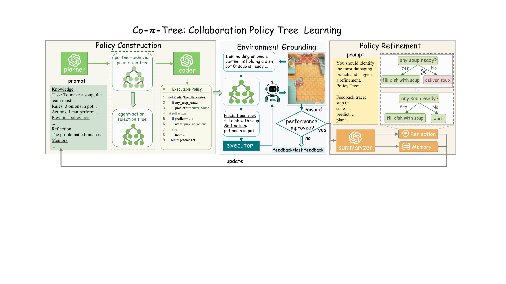
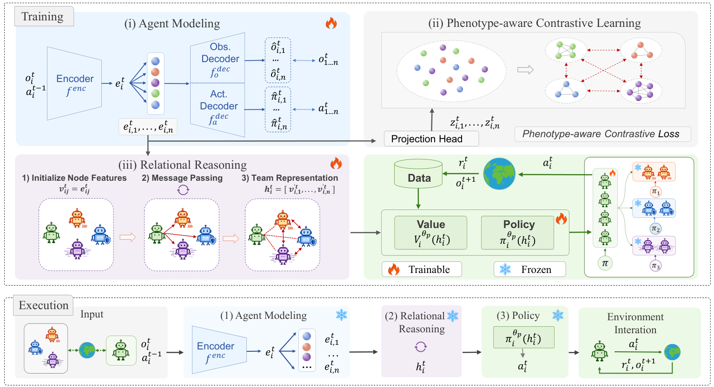

Co-π-tree: Distilling LLM Reasoning into an Interpretable Policy Tree for Human-AI Collaboration Findings of EMNLP 2026.
Beiwen Zhang, Yongheng Liang, Guowei Zou, Haitao Wang, Hejun Wu.
[Paper] [Project Page]

Co-π-tree: Distilling LLM Reasoning into an Interpretable Policy Tree for Human-AI Collaboration Findings of EMNLP 2026.
Beiwen Zhang, Yongheng Liang, Guowei Zou, Haitao Wang, Hejun Wu.
[Paper] [Project Page]

PACT: Phenotype-Aware Contrastive Team Representation for Multi-Phenotype Grouped Ad Hoc Teamwork arXiv preprint, 2025; revised 2026.
Beiwen Zhang, Yongheng Liang, Guowei Zou, Haitao Wang, Liu Cong, Hejun Wu.
[Paper]

CoFlow: Coordinated Few-Step Flow for Offline Multi-Agent Decision Making arXiv preprint, 2026.
Guowei Zou, Haitao Wang, Beiwen Zhang, Boning Zhang, Hejun Wu.
[Paper] [Project Page]